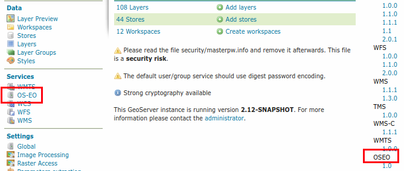

Installing the OpenSearch for EO module¶
The installation of the module requires four steps:
Setting up a PostGIS database with the required schema
Install the OpenSearch for EO plugin and configure it
Fill the database with information about collection and metadata
Setting up the PostGIS database¶
Create a PostgreSQL database and run the following SQL script:
https://raw.githubusercontent.com/geoserver/geoserver/master/src/community/oseo/oseo-core/src/test/resources/postgis.sql
Downloading and installing the OpenSearch extension¶
The module is a community one, and thus available among the nightly builds of the desired series (the module works for 2.12.x onwards):
Check the download page <http://geoserver.org/download/> for the desired series (development, stable or maintenance)
Follow the nightly build links
Check the
community-latestfolderDownload the
geoserver-<VERSION>-SNAPSHOT-opensearch-eo-plugin.zipfile, and unzip its contents in the GeoServer unpacked WAR lib directory, e.g., “geoserver/WEB-INF/lib”Restart GeoServer
The GeoServer home page after the OpenSearch for EO module installation.¶